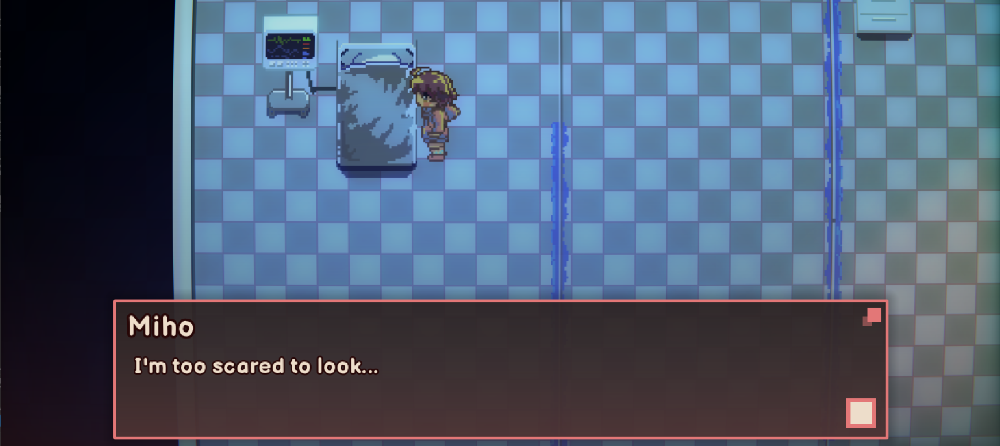

Interesting stuff I found
Bullets random luck RNG
The reason the final part I feel... inconsistent and making me confused to why I was alive 5 seconds before and then I respawned the moment I touched the missile is because...
# script/entity/Bullet.gd - included the original dev(s) comment func processInteraction(delta): # ... else: if isHit: isHit = false return if randi_range(1,60) <= 3: # mint_duck: now I see why... # 3 frame invincibility window # is random though return if !gameManager.isInCutscene: # ... teleport you back to the last checkpoint ... isHit = false return doMovement(delta)
But we can patch it up by granting Miho literal god mode and brick the entire universe:
# script/entity/Bullet.gd func processInteraction(delta): # ... else: # if miho hits a bullet if isHit: return # tell the game "he's fine, don't do anything else" if randi_range(1,60) <= 3: # ... the rest of the function ...
And here we go, Miho have reached immortality :)
Window size flickering bug
I guess this is because the game instantly updates the window resolution on the setting menu when I slide through the options. Rapid flashing warning for sensitive people!!
I might have to look why the game is freaking out when changing resolution, gonna update if I found it.
Second ending condition
We can absolutely find it by... guessing, yes.
If you interact with this bed on 4th floor in the final act, the game simply tell you this:

But when that dialog show to you?
This:
# script/textbox/TextboxCanvasLayer.gd - included the original dev(s) comment func _process(delta): # ... omitted ... if done: if !isTransitionOut and hideArm and Input.is_action_just_released("Action_Confirm",true): # ... if isYesnoquestion: #code to run if yes no question is enabled match entityRef.confirmationType: # ... omitted ... "mihoHospitalBed": if gameManager.flags["isTimeLoop"]: # <- mint_duck: this flag print("Showing hospital bed cutscene reveal") gameManager.populateMihoHospitalBedCutscene() gameManager.startCutscene(gameManager.MihoHospitalBedCutscene) else: await dialogFinished trigger("Miho","I'm too scared to look...") # mint_duck: found 'em # ... omitted ...
Searching flags["isTimeLoop"] eventually led us to:
# script/gameManager.gd - included the original dev(s) comment func isTrueEnd(): ## TRUE END CONDITIONS: ##Must have played the game before ##get Shiho Clicker! high score, ##helped Blue Cube and Grey in White Void, ## helped Snowman in Snow Tundra, ##helped Chesspiece in Chessboard, ##pass Stairs trial return flags["isTimeLoop"] and flags["highScore"] and # mint_duck: completely skipped this flags["helpedBlueAndGrey"] and flags["helpedSnowman"] and # mint_duck: completely skipped this flags["helpedChesspiece"] and !flags["stairsFailed"]
Conclusion: I have to play the game again.
Of course, I can patch that function to always return true, but that's boring, I'm gonna play the game again
Some thoughts
Godot is very powerful, but currently it's very easy to let random curios people to decompile the game code - since everything is plain text file - patch it whatever they want, then repackage it.
You would think this might be the greatest idea for modding, or might be the worst idea (Fractureiser in Minecraft for example).
Honestly, I don't know, if you enjoy the game, it's a win.